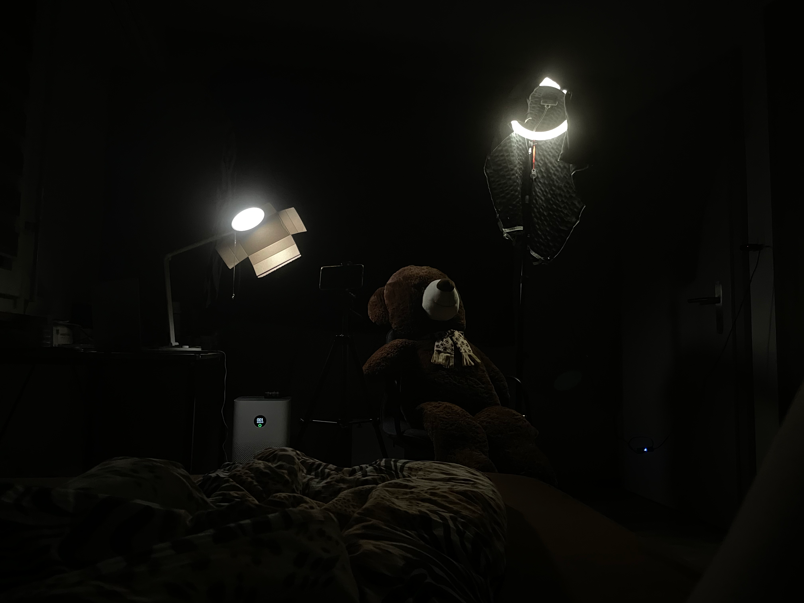

Balkan-Diaspora: queer* youth
2022
Kamera & Postproduktion: Braelyn Mitrovic
Zeitrahmen: 6h
Von der Idee bis hin zum Casting, Gestaltung der Kulisse, Briefing der Protagonist:innen, Produktion und Schnitt hatte ich vier Stunden Zeit, eine Reportage zum vorgegebenen Thema «Käfig» umzusetzen. Dieser Leistungsnachweis für die ZHaW stellte meine Kreativität und Originalität auf die Probe. Mit einem Xiaomi-Mobiltelefon, zwei Lampen und einem Teddybären organisierte ich auf den letzten Drücker einen Dreh in meinem Schlafzimmer. Entsprechend dem knappen Zeitbudget und den begrenzten Ressourcen ist der Schnitt holprig und das Sound Design schlampig – dafür entstand ein solides Proof of Concept für eine Dokumentation.